OUR 2025 WRAPPED ~ Let's go down memory lane shall we?
You were my favourite part of this year
Here are some highlights
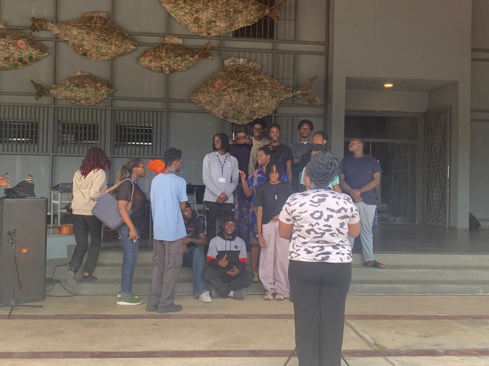
First time we met
 Our first date
Our first date
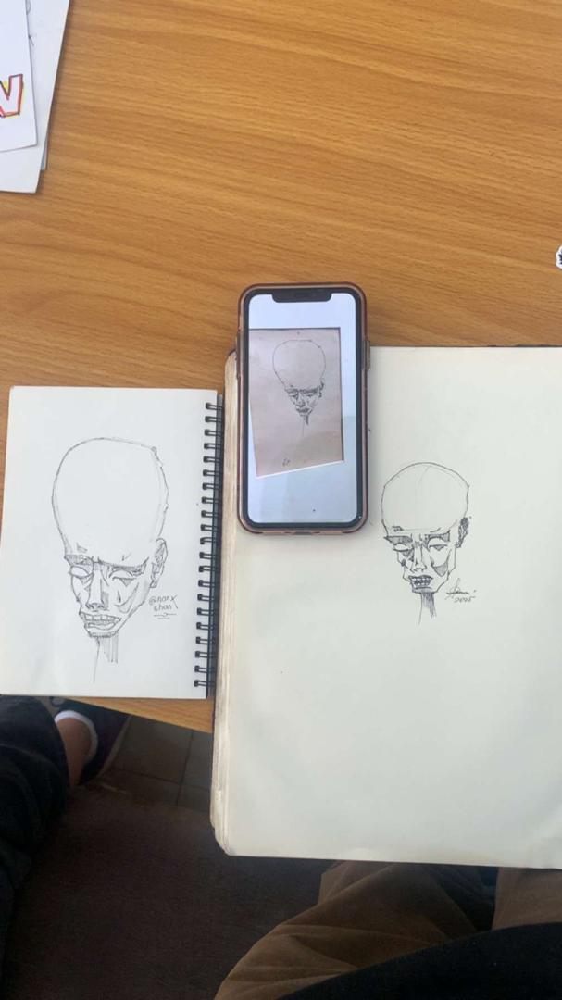
Our drawings
 You and Daveed serving face
You and Daveed serving face
 birthday boy
birthday boy
 our hug
our hug
 I just really like this photo
I just really like this photo
 Hanging out at band
Hanging out at band
 When we came back from the playpallette
When we came back from the playpallette
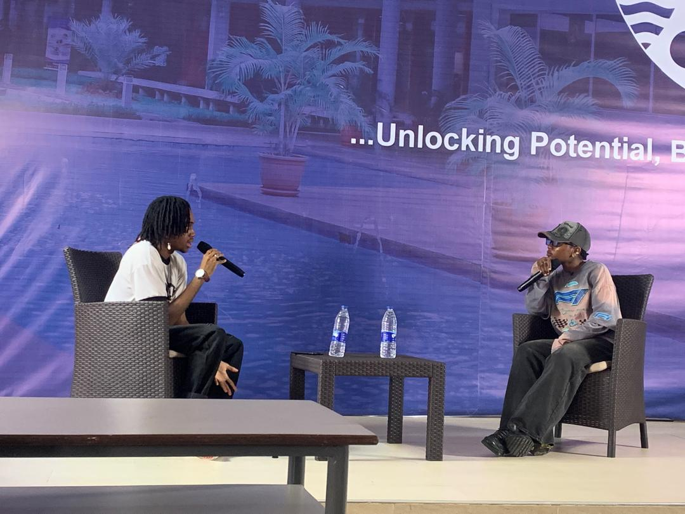
Your panel!
 My favourite shirt
My favourite shirt
 Messing around with nayd
Messing around with nayd
 Our kids
Our kids
 Sick Akan
Sick Akan
 you editing photos
you editing photos
 Us holding hands
Us holding hands
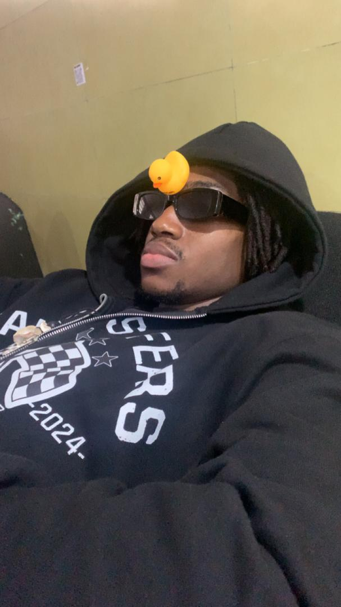
Our adoptive son
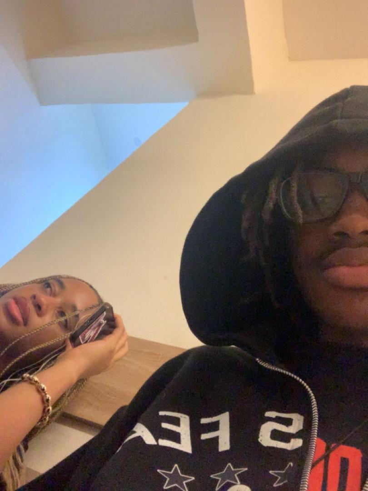
Sick Akan Pt. 2
 Bread muncher 1000
Bread muncher 1000
 You and Gojo
You and Gojo
 embarrased akan
embarrased akan
 Us watching Naruto and eating
Us watching Naruto and eating
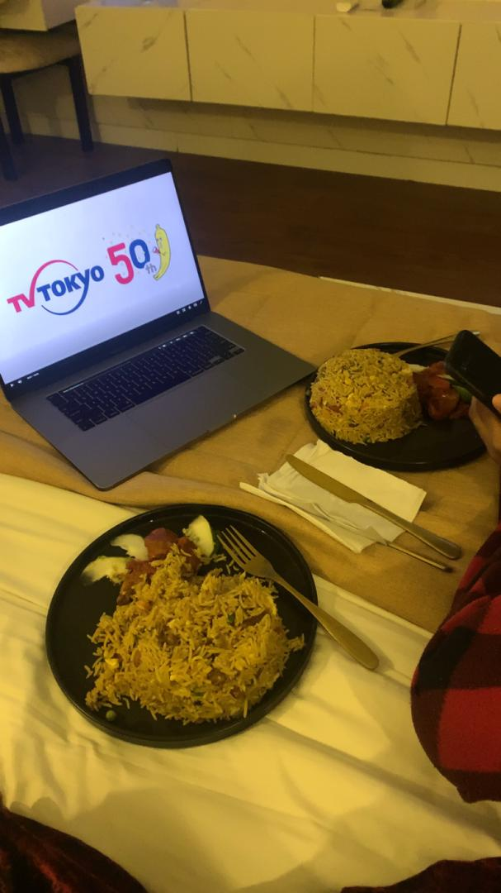
The food we didn't end up finishing
 Starfire to your nightwing
Starfire to your nightwing
 Nightwing to my starfire
Nightwing to my starfire
 You catching me off guard
You catching me off guard
 Mirror selfie
Mirror selfie
 Me taking pictures of you sleeping whenever i get the chance to
Me taking pictures of you sleeping whenever i get the chance to
 You sleeping again
You sleeping again
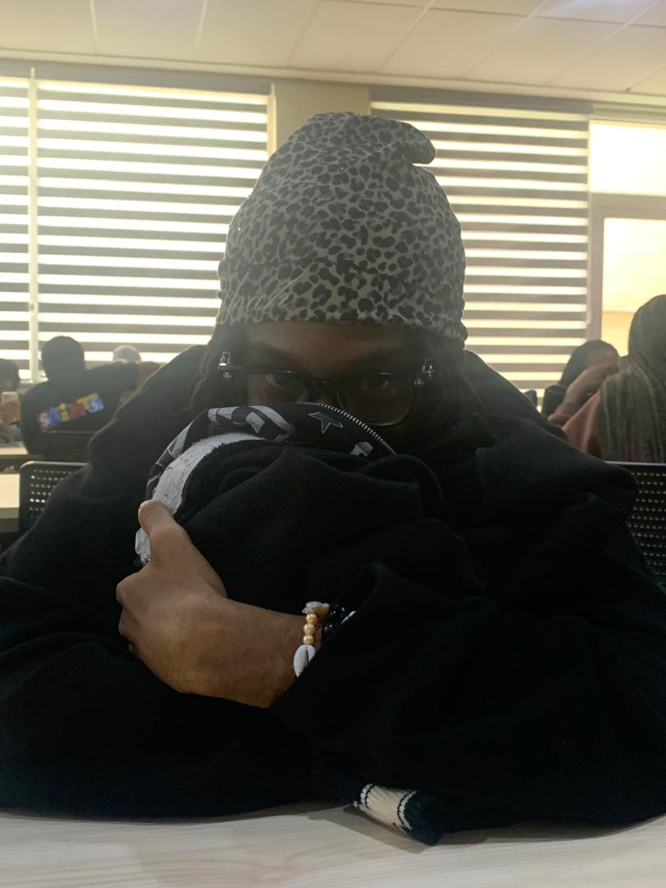
You sniffing the hoodie you gave me (weirdo)
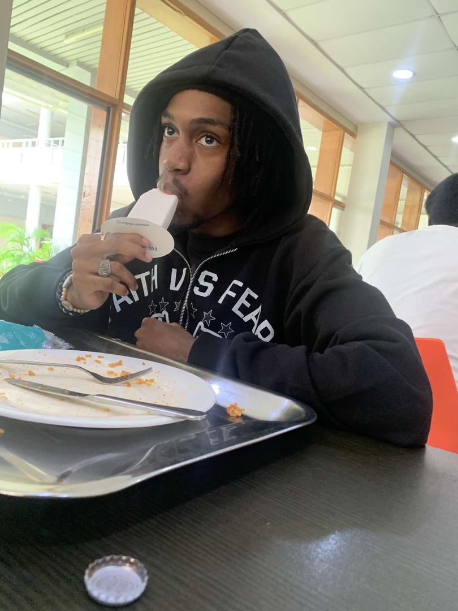
You eating the popsicle i got you
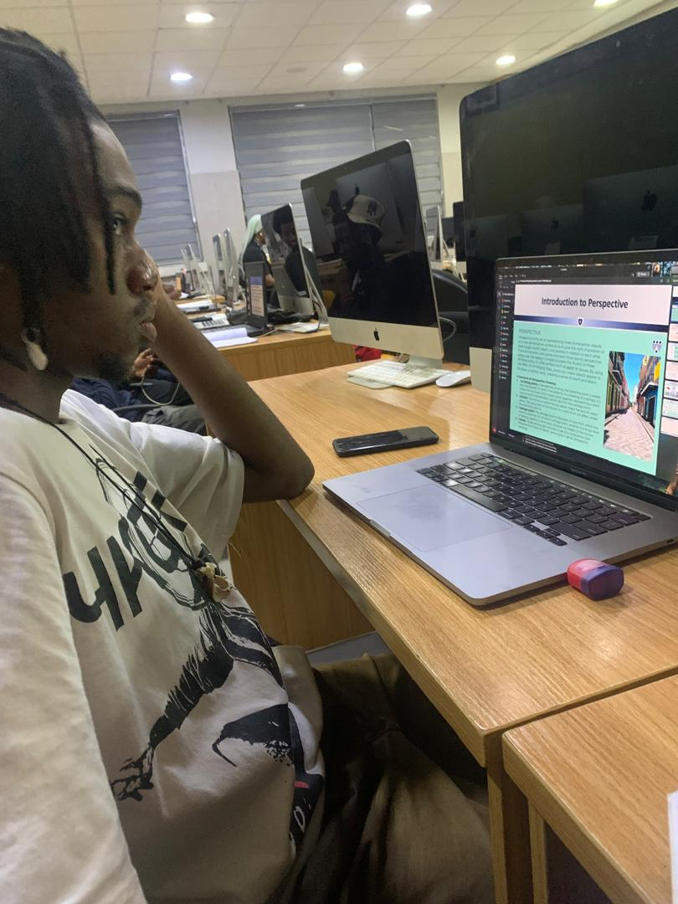
You being studious
 Digicam 1
Digicam 1
 Digicam 2
Digicam 2
 Digicam 3
Digicam 3
 My fav facetime photo
My fav facetime photo
 Weirdo activities
Weirdo activities
 Weirdo activities 2
Weirdo activities 2
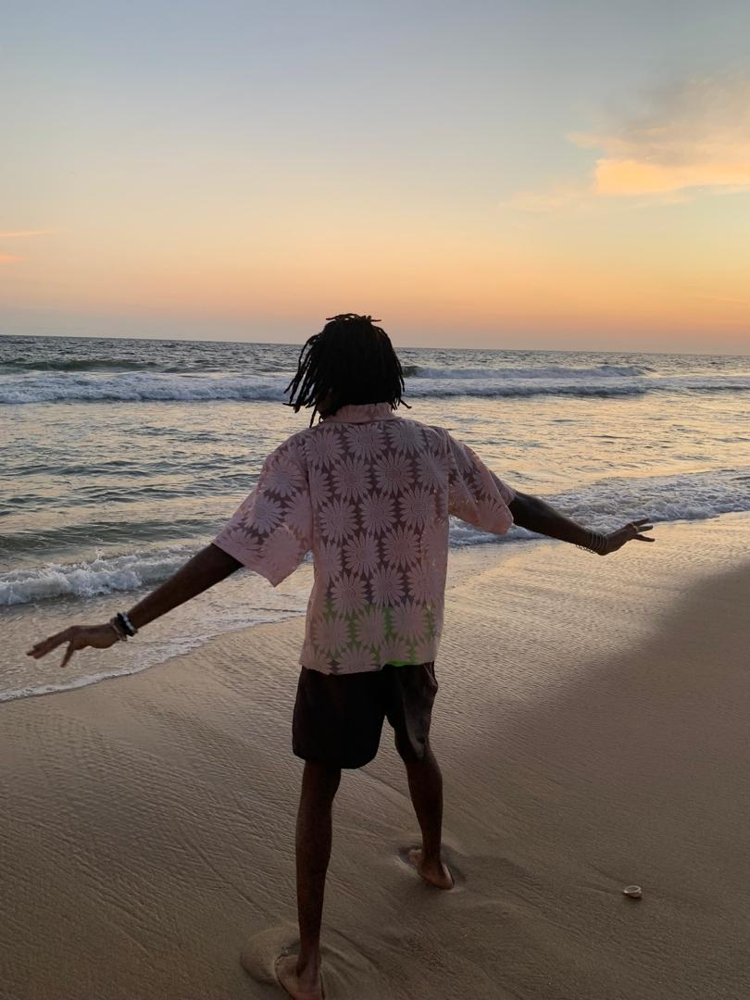
Red bull gives you wingssss
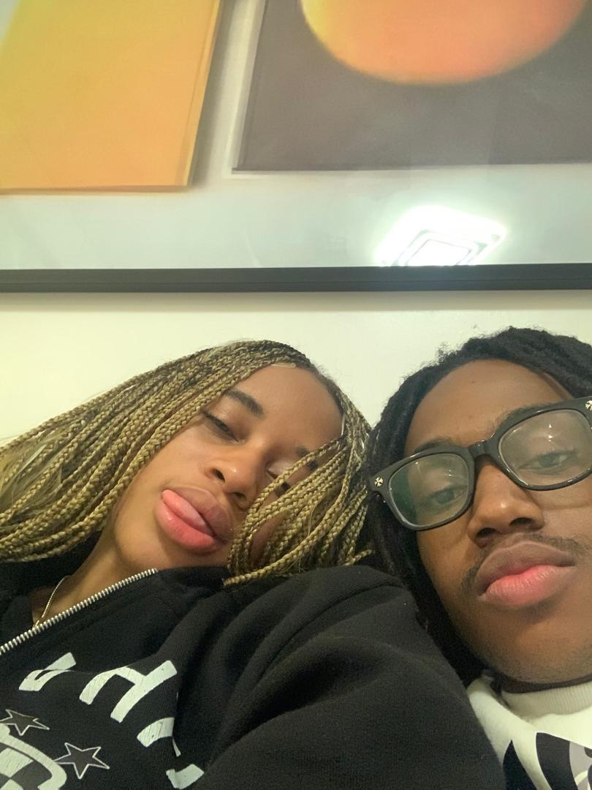
October 5th
 That damn smirk
That damn smirk
 Cheeky smile
Cheeky smile
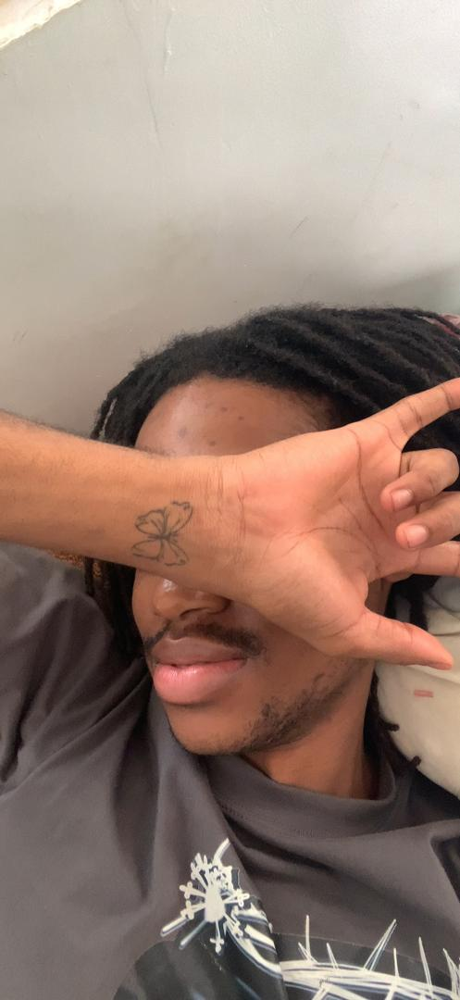
Gorgeous man
 At the beach
At the beach
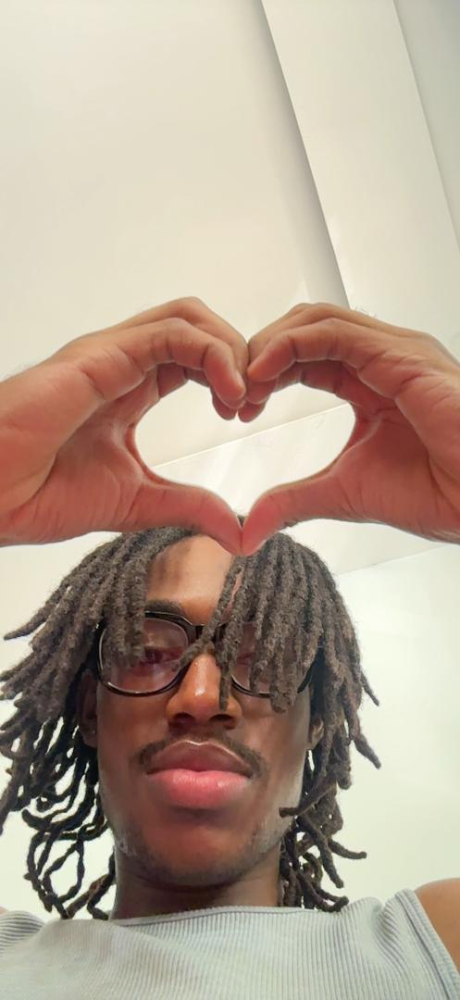
Cutie
This is just the beginningCan't wait to make more memories with you